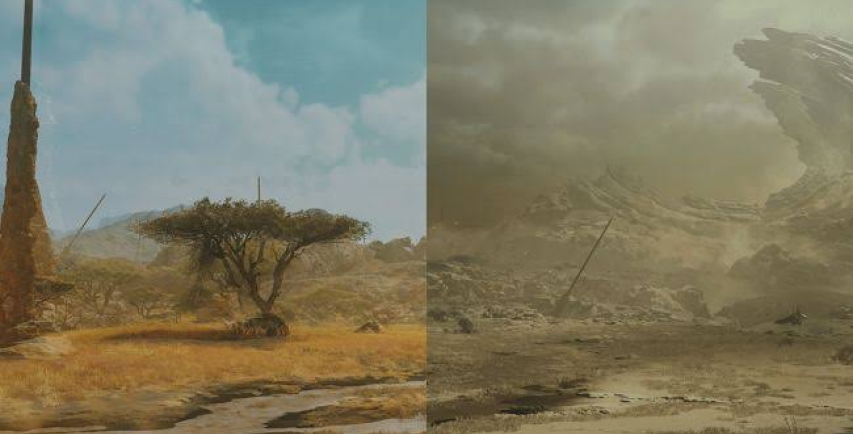
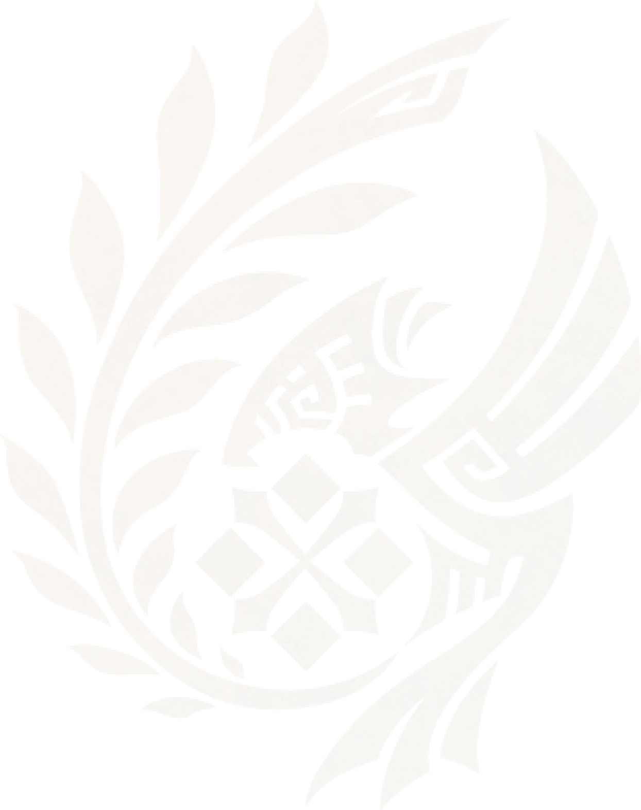
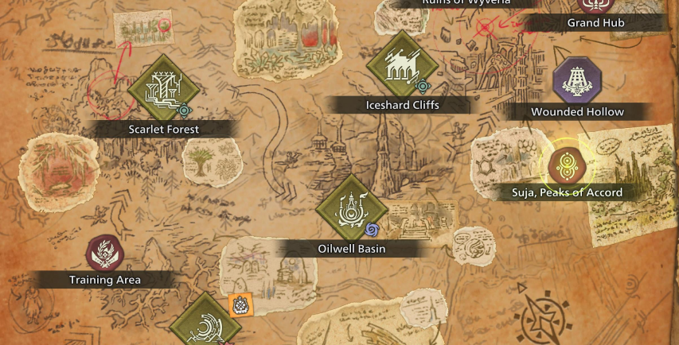
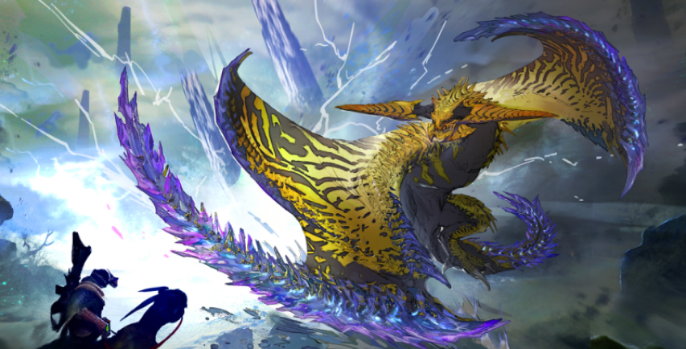
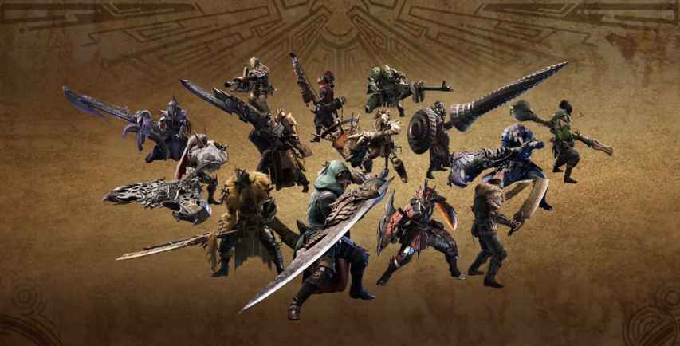
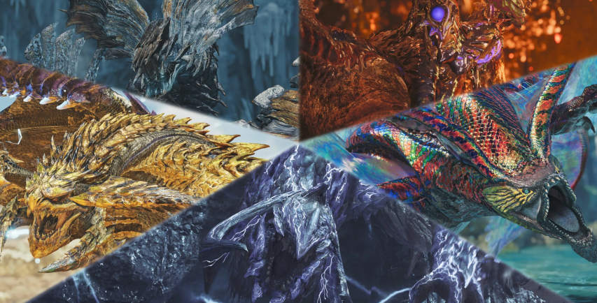

The Forbidden Lands
Monster Hunter Wilds is Capcom's action RPG about hunting huge monsters in a living ecosystem. You play a hunter who travels through the Forbidden Lands. Each region has its own terrain, wildlife, and dangers.
The world changes through three phases. Plenty is bright and full of resources. Fallow is dim, with fewer materials and more fighting between monsters. Inclemency comes between the two and brings a dramatic weather event. Rarer monster variants can appear during it.
Your Seikret is a mount you can call from almost anywhere. It carries you across the map, so you spend less time walking and more time tracking prey. The Seikret comes from a settlement in the Windward Plains.
Plenty → Inclemency → Fallow → Inclemency → repeat- Plenty: bright and full of resources
- Fallow: dim, with fewer materials and more fighting between monsters
- Inclemency: a dramatic weather event with rarer monster variants


Regions and Inclemencies
The campaign takes you through five regions. The Windward Plains is a mix of deserts, grasslands, and rock formations. Its Inclemency is the Sandtide, a thundering sandstorm. Following the river leads you to the Scarlet Forest, where the Downpour floods the land.
Next come the Oilwell Basin and the Iceshard Cliffs. In the Oilwell Basin, oil wells up from the ground. Its Firespring ignites the oil pools. Some areas are hot enough to drain health, so you need a Cool Drink. The Iceshard Cliffs are the opposite. Cold lowers your maximum stamina, so you need a Hot Drink. The Frostwinds blizzard cuts visibility.
The last region is the Ruins of Wyveria. A Wyverian civilization once lived there, and now only ruins and monsters remain. Its states are Plenty, Fallow, and Wyvern's Stirring. It is also home to some of the deadliest creatures in the campaign.
| Region | Inclemency |
|---|---|
| Plains | Sandtide |
| Forest | Downpour |
| Oilwell | Firespring |
| Iceshard | Frostwinds |
| Wyveria | Wyvern's Stirring |
Gear check
Oilwell Basin: Cool Drink
Iceshard Cliffs: Hot Drink- Windward Plains: deserts, grasslands, and rock formations
- Scarlet Forest: reached by following the river
- Oilwell Basin: oil wells up from the ground
- Iceshard Cliffs: cold lowers your maximum stamina
- Ruins of Wyveria: all that remains of a Wyverian civilization

The Monster Bestiary
The game has 35 new monsters and 16 returning ones. Each region has an apex predator that rules over it. These include Arkveld, Rey Dau, Uth Duna, Nu Udra, and Jin Dahaad. Returning favorites include Rathian, Congalala, Gypceros, and Yian Kut-Ku.
Not every creature can be hunted. Wudwuds, Mernos, Seikrets, and the Aptonoths at some base camps are off limits. The Ruins of Wyveria add Constructs such as Guardian Arkveld and Guardian Rathalos. Their elements and weaknesses differ from the standard versions.
Later updates added more monsters. Mizutsune came first, followed by Lagiacrus and Seregios, and then Gogmazios. Title Update 3 added Omega Planetes through the Final Fantasy XIV collaboration.
Hunt note: Ruins of Wyveria
Guardian Arkveld, Dragon element
Weakness: Dragon- Apex predators: Arkveld, Rey Dau, Uth Duna, Nu Udra, Jin Dahaad
- Returning favorites: Rathian, Congalala, Gypceros, Yian Kut-Ku
- Not huntable: Wudwuds, Mernos, Seikrets, and some Aptonoths

Weapons and Focus Mode
The game has 14 weapon types, and every one is available from the start. They range from the Great Sword to the Insect Glaive, so you can play slow and heavy or fast and agile. Try several before you settle on one.
Focus Mode is a key new mechanic. It lets you aim and steer your attacks. Great Sword players can charge a swing and use focus to track a monster that moves around them. Insect Glaive players describe the Focus Strike as very satisfying. You can set Focus Mode to a toggle in the settings, which many players find more comfortable.
Pair your weapon with a build. Armor, charms, and decorations add skills that suit your play style. A good build matches the weapon to the monster's weakness. Check each monster's element before you leave camp.
Loadout check
Weapon: _____
Element: _____
Armor skill: _____
Items: Potion, Whetstone, Drink- Great Sword: charge a swing and use focus to track a monster
- Insect Glaive: the Focus Strike players call very satisfying
- Focus Mode: can be set to a toggle in the settings

Endgame and Updates
After the story, hunting continues with Tempered and Arch-Tempered monsters. Title Update 1 added Mizutsune, a Tempered Mizutsune, and a high-rank Zoh Shia. Later updates added 8-star and 9-star hunts. Title Update 4 brought Gogmazios, Gogma Artian weapons, and an Arch-tempered Jin Dahaad. Arch-tempered Arkveld followed in February 2026 as the last arch-tempered monster on that roster.
Capcom's update page lists Ver. 1.042.00.03, released October 27, 2026. Monster Hunter's official account also teases the Wilds evolving with Ascendance in 2027. Check Capcom's update page for current details.
Some community members call Omega Planetes the toughest fight so far. They say it is best tackled as a group. Treat that as player opinion, not an official ranking.
Endgame loop
Hunt → Gather parts → Craft → Upgrade → Hunt harder- Tempered and Arch-Tempered monsters after the story
- 8-star and 9-star hunts added in later updates
- Gogma Artian weapons from Title Update 4
